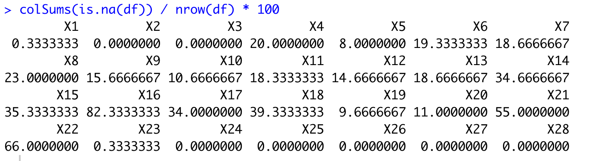

Methods of Imputation
- Statistical Imputation
- KNN Imputation
Data set: Horse Colic Dataset
- Describes medical characteristics of horses with colic and whether they lived or died
- It is a binary classification prediction task that involves predicting 1 if the horse lived and 2 if the horse died
- You can learn more about the dataset here
- There are 300 rows and 26 input variables with one output variable
- Note that data includes '?'
- How to read it?
test <- read_csv('horse-colic.csv', col_names = FALSE)
- all the columns including '?' are considered as string
df <- read_csv('horse-colic.csv', col_names = FALSE,
na = c("?", NaN))
The number of missing values
Common statistics calculated include
- The column mean value
- The column median value
- The column mode value
- Replace the missing values with one above
- Quite popular and simple
How do you code?
replace(x, list, values)
- x: vector
- list: an index vector
- values: replacement values
- Consider replace the missing values in X4 with its mean
- note that about 20 % are missing
df <- df %>%
mutate(X4 = replace(X4, is.na(X4), mean(X4)))
df <- df %>%
mutate(X4 = replace(X4, is.na(X4), mean(X4, na.rm = T)))
- How do we know that using a mean statistical strategy is good or best for this dataset?
- comparing the mean, median, mode (most frequent), and constant (0) strategies
- Basically, the answer is that we don't and that it was chosen arbitrarily
- However, if the sample is large and the population distrubtion is known, it could be
- Why?

- Then, in what situations the statistical imputation is dangerous?
- Consider a time dimesion: e.g. month, year
- What assumptions do we need?
- Independence
- Additionally, your data has a individual identifer
- How do you approach?
- Very challenging due to the small observations for each individual
High Dimensional data
- Now you have a large number of columns, called a high dimensional data
- also called a big data
- Note that a Row indicates the respondent/observation/subject
- Each column provides the information of the subject
- more columns would provide more information
- In this case, if there is a missing value, may use the information from the similar observations
- use a model to predict the missing values
the k-nearest neighbor (KNN) algorithm has proven to be generally effective, often referred to as nearest neighbor imputation
- Actual imputation is beyond the scope of the class, but let's learn some intution
- Suppose you have data recording height and weight of Brandeis students
- one weight information is missing
- statistical imputation would work
- but you have height information
- use the same height individual's weight
- why not?
- Ok, use the average of weights $\pm$ 0.5 kg
- Hmm, what about $\pm$ 2 kg
- What's the points?
- Variance Bias tradeoff
- close distance would have the small number of observations
- depending on the metric (height), the impute variance would be high
- long distance would have the many number of observations
- hard to hit the accurate imputation but low variance